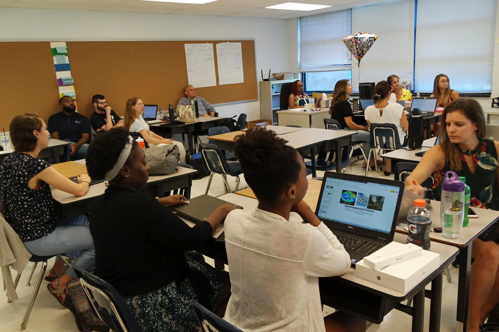

Bienvenido a TodoFP
Esta oferta está dirigida a personas que desean cursar formación profesional de forma presencial o a distancia.

Esta oferta está dirigida a personas que desean cursar formación profesional de forma presencial o a distancia.

Aprenderás a crear y vincular hojas de estilo externas, aplicar clases, trabajar con diseño visual y mejorar la presentación de páginas web.
Explora materiales audiovisuales relacionados con la formación profesional.
Cursos
Alumnos
Módulos